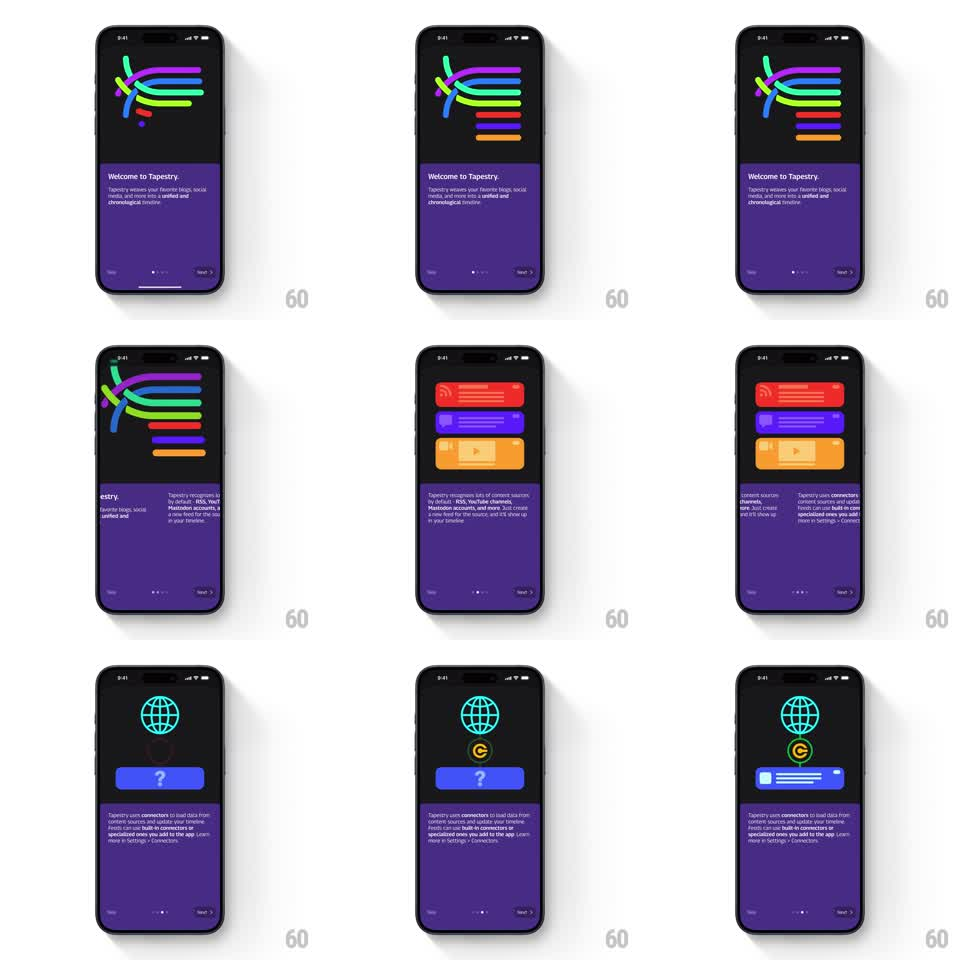

Media
Frame-by-frame

Rebuild this animation 1:1: Tapestry's onboarding header - abstract woven colored lines gather and morph into stacked source cards (RSS, Mastodon, YouTube), then into connector icons above a button.

Rebuild this animation 1:1: Tapestry's onboarding header - abstract woven colored lines gather and morph into stacked source cards (RSS, Mastodon, YouTube), then into connector icons above a button.
## Integration
Integration: stack-agnostic spec - springs given as stiffness/damping, timed motions as duration + curve; map every value to your framework and animation library of choice.
## Scene
Tapestry onboarding, near-black with a purple bottom sheet ("Welcome to Tapestry" + copy + Skip / Next + page dots). The header area holds the animation: first a weave of curved colored strokes (blue, pink, green, red, orange), then three stacked rounded cards (red RSS, purple social, orange YouTube), then connector icons (teal wireframe globe, green C-circle) over a blue button.
## Motion spec
Pattern: vector morph from woven lines to source cards to connector icons.
- The weave enters as loose strokes that settle into an interlaced bundle (each stroke draws on, 400ms, 60ms stagger), gently undulating (stroke control points oscillate +/-6px, 3s loop).
- On Next, each stroke straightens and slides to its target card position, thickening and rounding into a filled card (morph over 450ms, ease-in-out): blue/pink/green strokes land as the card stack while red and orange strokes settle last into their cards.
- Card faces then fade their glyphs in (RSS waves, play button, text lines) over 250ms, 80ms apart top to bottom.
- Next step: the cards shrink and orbit inward (scale -> 0.4, 350ms) and crossfade into the connector icons, which pop with a spring (~380/15) - globe first, then the C icon 120ms later; the blue button fades up beneath them (250ms).
- Every transition is a true shape morph where possible - strokes become cards, not one image swapping for another.
## Calibration
- Palette is fixed per source: red = RSS, purple = social, orange = YouTube, teal/green = connectors.
- The purple sheet and its text only crossfade between steps (250ms) - the header owns the show.
## Reduced motion
Header states crossfade (300ms); no stroke morphing.
## Don't miss
- The weave must read as threads crossing over/under each other - preserve the interlace during undulation.
- Page dots advance with each morph; Skip stays put.